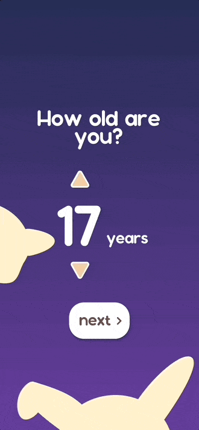
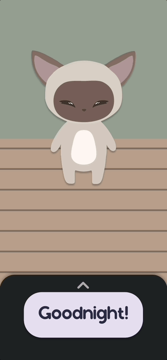
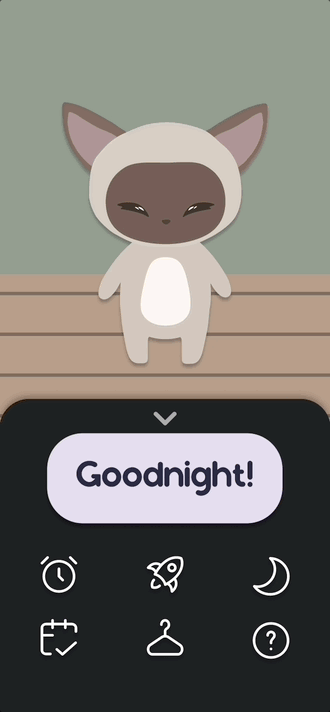
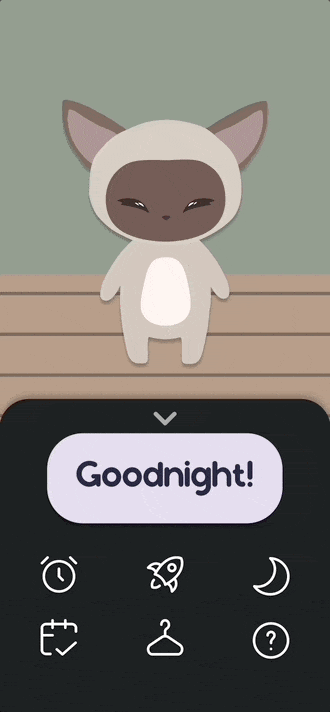

Sleep is a major factor in determining how humans function throughout the day. Research shows that the majority of students don't get enough sleep. Most get around 6 or less, not reaching the recommended 8.
how?
The goal of NightBuddy is to gamify the average night, providing incentive to sleep through its reward system and personalization of the buddy. With NightBuddy, users have access to:
resources to improve sleep quality
a built-in alarm clock
a companion that goes to sleep with them
To appeal to a young adult audience, the app has "cute" themes, with rounded corners and typography to create a friendly environment.
Gabby
Background
Gabby is a third year college student who works part-time at a coffee shop. She likes playing mobile games in her free time and volunteers at an animal shelter.
Challenges
Struggles with falling asleep, and often finds herself scrolling on her phone late at night.
Sabrina
Background
Nina is a junior designer who finds networking challenging and intimidating. Recognizes the importance of building professional connections but doesn't know where to start.
Sabrina is a first year biology student at the University of Phoenix, Arizona. She's still getting adjusted to college and having a different schedule and lifestyle from high school.
Challenges
Struggles with organizational skills and time management. Finds herself overwhelmed by classes, work, and social life. Desires a platform that can assist her getting her schedule organized.
Our typography choices were made with lightness, ease of reading, and branding in mind. We felt that Space Grotesk was fitting for our space-themed platform. The choice of different fonts for headers and body text was made to increase visual stimulation and keep the interface looking fresh.
These typography choices were made to create a fun, bubbly environment for users, while still allowing full readability. Two different font styles were used to increase variation in the interface without the experience becoming overwhelming.
Title
Sonorous 35pt
Header
Sonorous 20pt
Body
Noto Sans 20pt
#1E2024
#E5DDEF
#FDF1C6
#9888A4
#B49ED0
#DDCD92
The Goal?
To provide users full incentive and resources to increase sleep.

NightBuddy offers a customizable experience. The user inputs their age, current hours, and desired hours to set their sleep goals. Personal connection between the user and the app is increased with different choices of Buddies.

An easy and convenient sleep tracker. The user's Buddy goes to sleep when they sleep, wakes up when they wake up, and their hours are tracked. Rewards are gained if the user meets their sleep goal.

A built-in To-Do list allows the user to enter their own tasks, helping with time management and task organization. A visualization of completed tasks incentivizes users to keep completing them.

A "Sleep Resources" page provides users with options to play music, podcasts, or ASMR to aid in falling asleep. This page also has links to articles on improving sleep quality, as well as guided tutorials on meditation and breathing tactics.